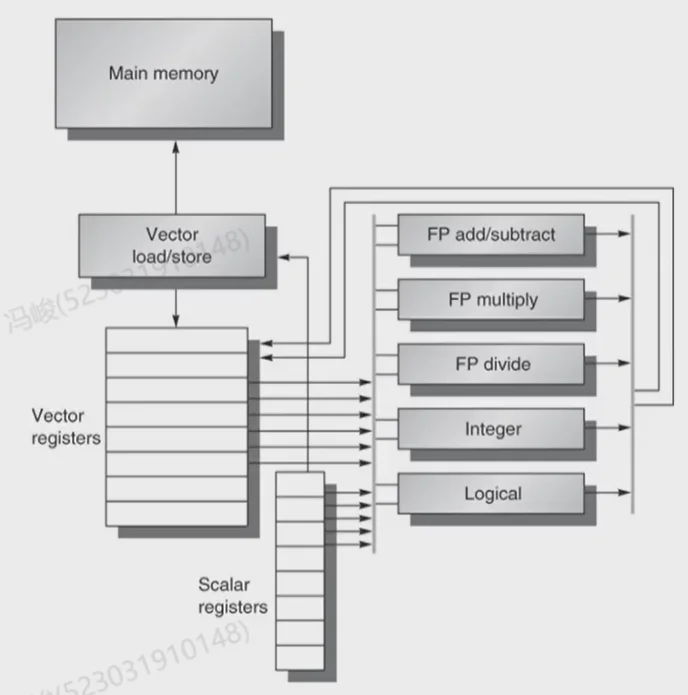
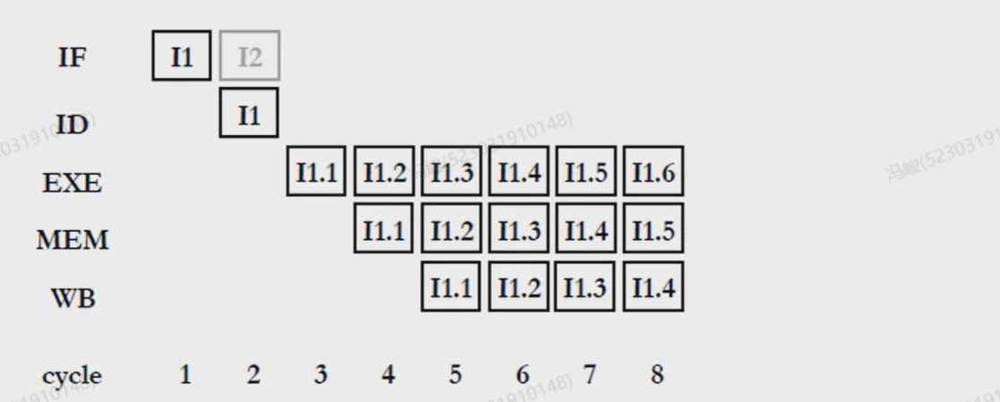
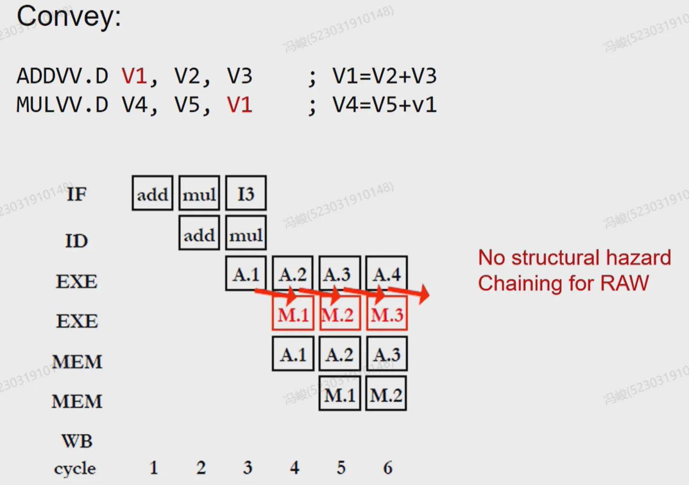
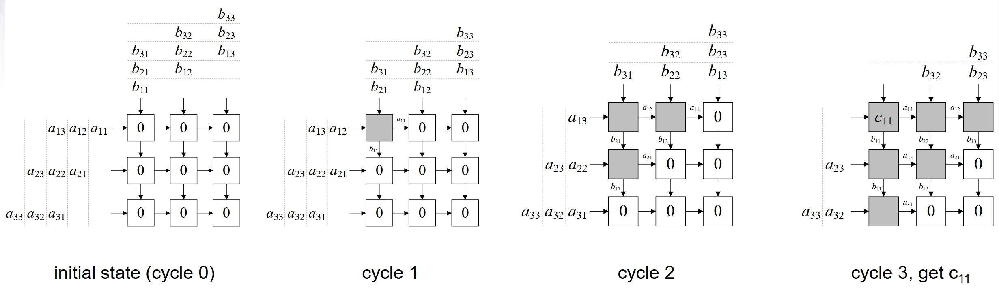
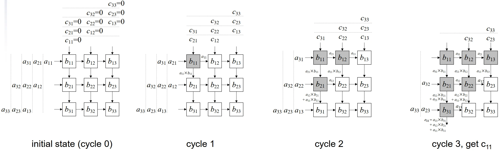

第六章：Parallel Processor¶
I. Parallel 基础¶
1.1 什么是处理器领域的“并行处理”？¶
在微电子和数字电路优化（VLSI）中，“展开（Unrolling）”本质上是一种“空间并行（Spatial Parallelism）” ——通过复制多份硬件资源（比如放多个加法器），让它们在同一个时钟周期内同时干活。
在处理器架构领域，并行的核心思想是一致的：在同一时刻（或同一个时间段内）执行多个操作，以提高系统的吞吐量（Throughput）和性能。
只不过，相比于纯硬件电路的“暴力复制”，处理器的并行具有更强的通用性、更复杂的控制逻辑，并且需要软硬件（指令集与微架构）的协同。
处理器领域的并行一般分为两个大维度：时间上的并行和空间上的并行。
- 时间并行（Temporal Parallelism）：流水线（Pipelining）是典型代表。一条指令没有执行完，下一条指令就开始了，时间上重叠。
- 空间并行（Spatial Parallelism）：增加多套执行单元（ALU、FPU等），在同一个时钟周期内同时处理多条指令或多份数据。
1.2 处理器中常用的并行分类（经典架构视角）¶
在现代计算机体系结构中，我们通常将并行按照“粒度”划分为三个主要层次。
(1) 指令级并行 (ILP: Instruction-Level Parallelism)¶
- 概念：在单线程中，寻找可以同时执行的、没有相互依赖的机器指令，让它们并行执行。
- 特点：通常由硬件（CPU的微架构）动态挖掘，对程序员是透明的（程序员不需要改代码）。
- 常见技术：
- 流水线（Pipelining）
- 多发射/超标量（Superscalar）：不仅流水线，我还在 CPU 里放好几个 ALU。每个周期从指令缓存里取多条指令，只要它们没冲突，就同时塞给不同的 ALU 执行。
- 乱序执行（Out-of-Order Execution, OoO）：打破指令的原有顺序，谁的数据准备好了谁先执行，榨干硬件的每一个周期。
(2) 数据级并行 (DLP: Data-Level Parallelism)¶
- 概念：对于同一组操作（指令），同时应用到大批量的不同数据上。
- 关联背景：这和“展开（Unroll）”非常像！比如想把两个各有100个元素的数组相加。在 SISD（单指令单数据）CPU里要循环100次；在 DLP 架构下，我们直接把硬件 ALU 复制 16 份、32 份，一条指令下去，同时算出 16 个或 32 个结果。
- 常见技术（即将学习的章节）：
- Vector Processor（向量处理器）：RISC-V 里的 RVV 扩展就是这个，用超长的向量寄存器，一条指令处理整个数组。
- SIMD（单指令多数据流）：Intel x86 的 SSE/AVX，或者 ARM 的 Neon，属于稍微短一点的向量处理。
- GPGPU（通用图形处理器）：这是 DLP 的极致形态。NVIDIA 显卡里动辄成千上万个计算核心（CUDA Core），本质上就是把数据级并行发挥到了极点。
(3) 线程级并行 (TLP: Thread-Level Parallelism)¶
- 概念：当 ILP（指令级并行）遇到瓶颈，DLP（数据级并行）又要求特定应用场景时，人们开始让处理器同时运行多个相对独立的线程或任务。
- 常见技术：
- 多核处理器（Multi-core）：把多个 CPU 核心塞进一个芯片（SoC）。
- 同步多线程（SMT, 也就是 Intel 的超线程 Hyper-Threading）：一个物理核心假装成两个逻辑核心，交替或者同时执行两个线程的指令，利用一个线程 Cache Miss 停顿的时间，去跑另一个线程。
1.3 体系结构祖师爷的分类：Flynn 分类法 (Flynn's Taxonomy)¶
根据指令流（Instruction Stream）和数据流（Data Stream）的数量，把计算机分成了四类：
- SISD（Single Instruction Single Data）：传统的单核 CPU，没有向量扩展。
- SIMD（Single Instruction Multiple Data）：这就是马上要学的。 一条指令控制多个处理单元，处理多份数据。Vector Processor 和 GPGPU 的底层核心思想就是 SIMD（NVIDIA 称其为 SIMT，本质是一脉相承的）。当然，这对程序本身要求比较高，要求必须有 DLP 的特征。哪些程序会有 DLP 呢？案例：图像处理、科学计算、机器学习等
- MISD（Multiple Instruction Single Data）：很少见，通常用于容错系统（多个芯片跑不同指令处理同一个数据，看结果对不对）。
- MIMD（Multiple Instruction Multiple Data）：现代的多核 CPU、数据中心集群，每个核跑不同的代码，处理不同的数据。
1.4 SIMD¶
- 对数据向量执行 elementwise 操作
- 例如：x86 中的 MMX 和 SSE 指令
- 128-bit wide registers 中包含多个数据元素
- 所有 processors 在同一时刻执行相同的 instruction
- 每个 processor 对应不同的数据地址等
- Spatial parallelism – 资源复制 (resource replication)
- 简化 synchronization
- 精简的 instruction control hardware
- 最适合高度 data-parallel 的 applications
- DLP (data-level parallelism)
II. DLP¶
2.1 Vector Processor（向量处理器）¶
2.1.1 Design¶
- 传统形式的 SIMD
- 深度流水线化的功能单元，用于开发 DLP
- 数据在 vector registers 与功能单元之间流式传输
- 数据从内存中收集到寄存器（vector registers）中
- 计算结果从寄存器写回内存
- 显著降低 instruction-fetch bandwidth（指令取指带宽）
示例：MIPS 的 Vector 扩展
- 32 × 64-element 寄存器（元素为 64-bit）
- Vector 指令
lv、sv：load/store vector（向量加载/存储）addv.d：add vectors of double（双精度浮点数向量加法）addvs.d：add scalar to each element of vector of double（标量与双精度浮点数向量的每个元素相加）
- pipeline 设计与 SISD 完全一致，只是处理硬件资源的数量增加了，可以同时处理多条数据

同时包含：
- vector registers（向量寄存器）
- vector functional units（向量功能单元）
- scalar registers（标量寄存器）
- scalar functional units（标量功能单元）
2.1.2 Example: DAXPY (Y = a * X + Y)¶
(1) 常规 MIPS 代码
l.d $f0,a($sp) ; load scalar a
addiu r4,$s0,#512 ; upper bound of what to load
loop:
l.d $f2,0($s0) ; load x(i)
mul.d $f2,$f2,$f0 ; a × x(i)
l.d $f4,0($s1) ; load y(i)
add.d $f4,$f4,$f2 ; a × x(i) + y(i)
s.d $f4,0($s1) ; store into y(i)
addiu $s0,$s0,#8 ; increment index to x
addiu $s1,$s1,#8 ; increment index to y
subu $t0,r4,$s0 ; compute bound
bne $t0,$zero,loop ; check if done
(2) Vector MIPS 代码
l.d $f0,a($sp) ; load scalar a
lv $v1,0($s0) ; load vector x
mulvs.d $v2,$v1,$f0 ; vector-scalar multiply
lv $v3,0($s1) ; load vector y
addv.d $v4,$v2,$v3 ; add y to product
sv $v4,0($s1) ; store the result
Vector MIPS 代码中，lv 指令一次性加载了整个向量（比如 64 个元素），mulvs.d 指令一次性对整个向量与一个标量进行乘法操作，addv.d 指令一次性对两个向量进行加法操作，最后 sv 指令一次性将结果存回内存。相比于常规 MIPS 代码需要循环处理每个元素，Vector MIPS 代码大大简化了指令数量，并且利用了数据级并行的优势。
但是，向量寄存器可能一次只能存 4 个元素，但是要处理的向量有 128 或者 512 个元素：
我们极端一点，假设向量寄存器的长度直接就是 1 个元素，那么就会出现如下情况：
(1) Example 1

I1 在 ID 阶段时，I2 指令不会被取指，因为 I1 指令还没有处理完所有的元素。I1 的下一组元素会继续处理，但是我们已经不用再软件上手动写循环了，硬件上会自动做掉。
整个处理时间大概就是 N(元素的个数) + 4 的时间。
(1) Example 2
No structural hazard ! I1 每处理一个元素，I2 就会在下一个周期处理该元素。这种操作叫做：chaining（链式操作）。好处就是如果相邻两条指令有 dependence，可以将两条指令链接起来，用同样差不多 N 个周期的时间处理完两条指令。当然，前提是功能单元有多个。

2.2 SIMD（单指令多数据流）¶
核心：一条指令控制多个处理单元，处理多份数据。
案例：
- Intel MMX (1996)
- 8个8-bit integer ops 或 4个16-bit integer ops
- Streaming SIMD Extensions (SSE) (1999)
- 8个16-bit integer ops
- 4个32-bit integer/fp ops 或 2个64-bit integer/fp ops
- Advanced Vector eXtensions (AVX) (2010)
- 4个64-bit integer/fp ops
Example: DAXPY (Y = a * X + Y)
with 256-b SIMD with suffix "4D" for 4 double-float operands
L.D F0,a ; load scalar a
MOV F1,F0 ; copy a into F1 for SIMD MUL
MOV F2,F0 ; copy a into F2 for SIMD MUL
MOV F3,F0 ; copy a into F3 for SIMD MUL
DADDIU R4,Rx,#512 ; last address to load
Loop:
L.4D F4,0[Rx] ; load X[i], X[i+1], X[i+2], X[i+3]
MUL.4D F4,F4,F0 ; a*X[i], a*X[i+1], a*X[i+2], a*X[i+3]
L.4D F8,0[Ry] ; load Y[i], Y[i+1], Y[i+2], Y[i+3]
ADD.4D F8,F8,F4 ; a*X[i]+Y[i], ..., a*X[i+3]+Y[i+3]
S.4D 0[Ry],F8 ; store into Y[i], Y[i+1], Y[i+2], Y[i+3]
DADDIU Rx,Rx,#32 ; increment index to X
DADDIU Ry,Ry,#32 ; increment index to Y
DSUBU R20,R4,Rx ; compute bound
BNEZ R20,Loop ; check if done
.4D 后缀就会告诉处理器一次要处理 4 个 double-float 数据。SIMD 指令的好处就是大大减少了指令数量，同时利用了数据级并行的优势。相比于常规 MIPS 代码需要循环处理每个元素，SIMD 代码一次性处理多个元素，大大提升了性能。
- MIPS: 578 instructions, VMIPS: 6 instructions
- SIMD:
9 * 64/4 + 5 = 149instructions, reduce bandwidth to 4x
2.3 Vector Processor vs SIMD¶
2.3.1 加速方式的对比¶
Vector Processor 加速的方式：将底层整个单元向量化，例如功能单元和寄存器都要向量化
SIMD 加速的方式：在原来的数据宽度的基础上，拆成更小的数据宽度，例如 256 拆分成 4 个 64-bit 的数据块，功能单元和寄存器不需要向量化，还是用原来的标量 Datapath，缺点就是要定义新的指令（.4D, .4S, .16D, .16S...），指令集的膨胀非常快。
2.3.2 Vector VS Scalar¶
- Vector architectures and compilers
- 简化 data-parallel programming（数据并行编程）
- 显式声明不存在 loop-carried dependences（循环携带依赖）
- 减少硬件层面的检查
- Regular access patterns（规则访问模式）可受益于 interleaved and burst memory（交错与突发内存访问）
- 通过避免 loops（循环）来避免 control hazards（控制冒险）
- 相较于 scalar architecture（标量架构），在 power and energy（功耗与能效）方面更具优势
- 比 ad-hoc media extensions（专用媒体扩展，如 MMX、SSE）更通用
- 与编译器技术的适配性更好
2.4 MISD Example: Systolic Array¶
核心：访问存储器的代价很大，因此：
Reuse the data read from memory as many times as possible（尽可能多次地重用从内存读取的数据）
脉动阵列的典型算法：矩阵乘法 GEMM¶
c 驻留

b 驻留
